非 {play} 歌曲 · 苍强简谱 → 123 → MusicXML → 悦谱混排
58 首里排除 36 首含 {play} 的，剩 22 首；21 首已出混排，遇萤 进 Dolce Mixed 失败。
时值核对口径：官方 playback_full（source_occurrence=1）逐小节 duration 求和 vs 我方 MusicXML 小节时值。
不老梦
逐小节一致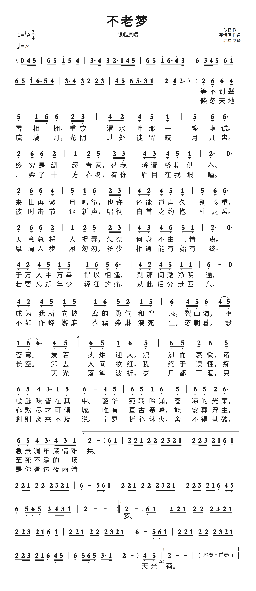
losses: linebreaks-joined:22 · slash-as-beam:2 · section-block-linearized · section-block-linearized · tag-dropped:start · section-block-linearized …


不谓侠-A
总时值一致 · 小节线偏移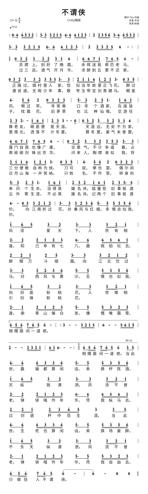

losses: linebreaks-joined:40 · section-block-linearized · section-block-linearized · section-block-linearized · section-block-linearized

不谓侠-B
总时值一致 · 小节线偏移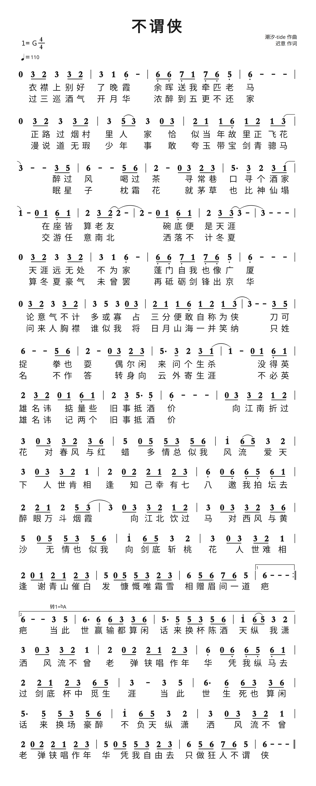
losses: linebreaks-joined:52 · tag-dropped:hot · pinyin-slot-dropped · tie-group-marker-dropped · tie-group-marker-dropped · tag-dropped:f:'bG' …


东风第一枝
总时值一致 · 小节线偏移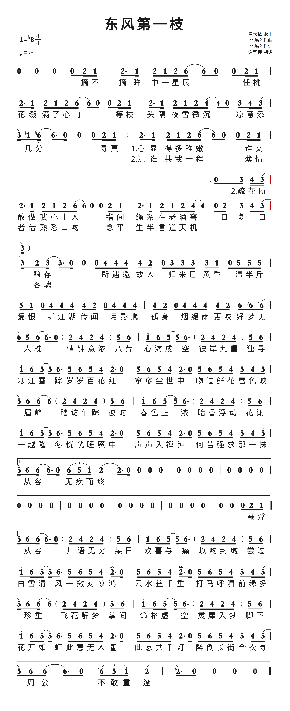
losses: linebreaks-joined:34 · lyric-group-to-brace:3 · raw-dropped:'n' · section-block-linearized · tag-dropped:lyric:'on' · section-block-linearized …


九万字
总时值一致 · 小节线偏移losses: linebreaks-joined:26 · raw-dropped:':'


云烟成雨
总时值一致 · 小节线偏移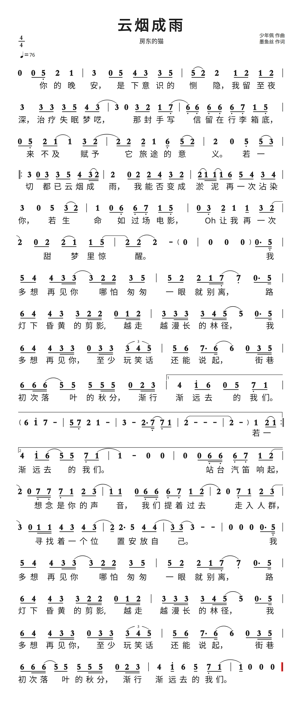
losses: linebreaks-joined:20 · keynote-empty · section-block-linearized · section-block-linearized · section-block-linearized · section-block-linearized …


咏春
总时值一致 · 小节线偏移losses: linebreaks-joined:14 · bo-marker-dropped:4 · section-block-linearized · section-block-linearized · section-block-linearized · section-block-linearized …


壁上观
总时值一致 · 小节线偏移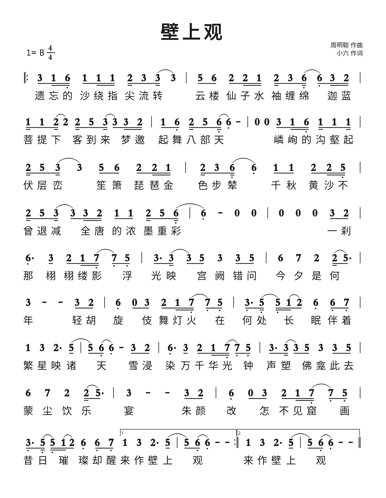
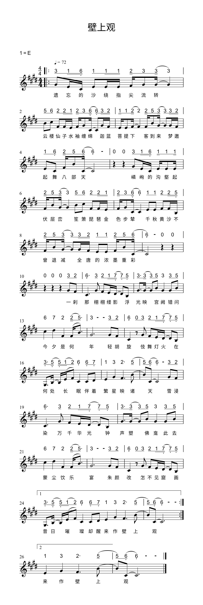
losses: linebreaks-joined:8


寄明月
总时值一致 · 小节线偏移
losses: linebreaks-joined:49 · pinyin-slot-dropped

年轮
总时值一致 · 小节线偏移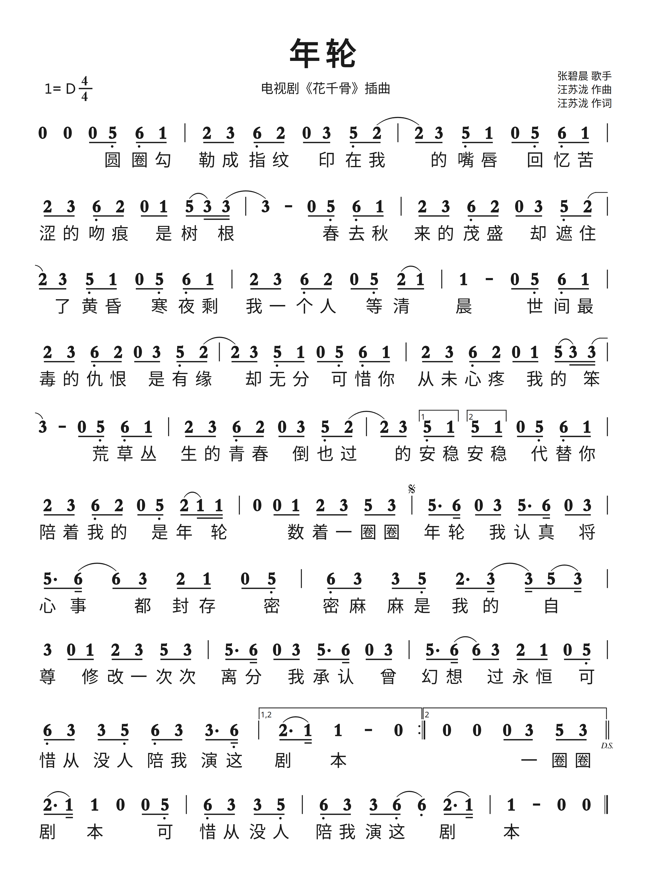
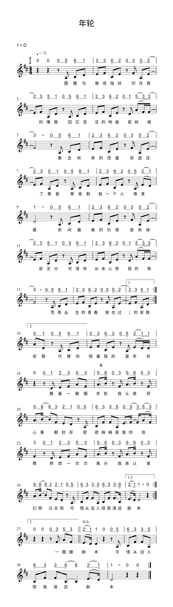
losses: linebreaks-joined:12


我的一个道姑朋友
总时值一致 · 小节线偏移
losses: section-labels-stripped · linebreaks-joined:40 · tag-dropped:f:'A4' · tag-unknown:o3f:'A' · tag-dropped:f:'C' · tag-unknown:o3f:'C' …

拜无忧
总时值一致 · 小节线偏移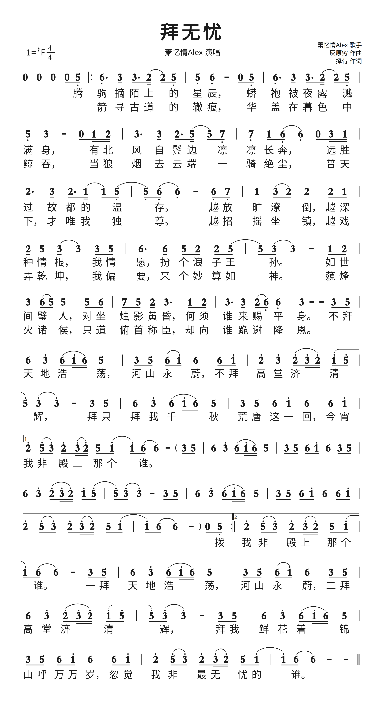
losses: linebreaks-joined:9 · section-block-linearized · section-block-linearized


明月天涯
总时值一致 · 小节线偏移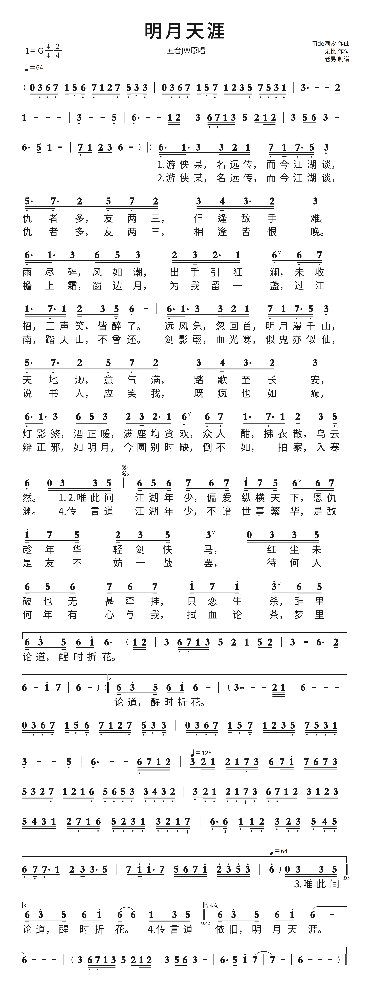
losses: linebreaks-joined:32 · lyric-group-to-brace:6 · section-block-linearized · pinyin-slot-dropped · section-block-linearized · tag-unknown::'start2' …


春三月-A
总时值一致 · 小节线偏移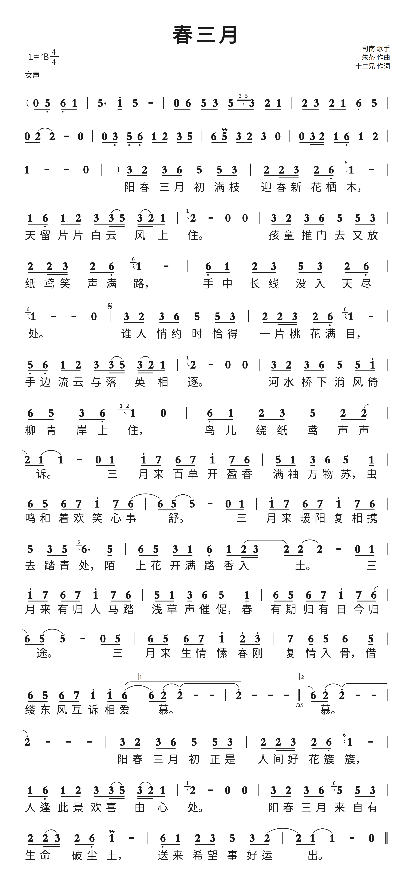
losses: linebreaks-joined:6 · bo-marker-dropped:1 · pinyin-slot-dropped · tag-dropped:hint:'女声' · section-block-linearized · section-block-linearized …


春三月-B
总时值一致 · 小节线偏移losses: linebreaks-joined:18 · tag-dropped:omit:'9m'


棠梨煎雪
总时值一致 · 小节线偏移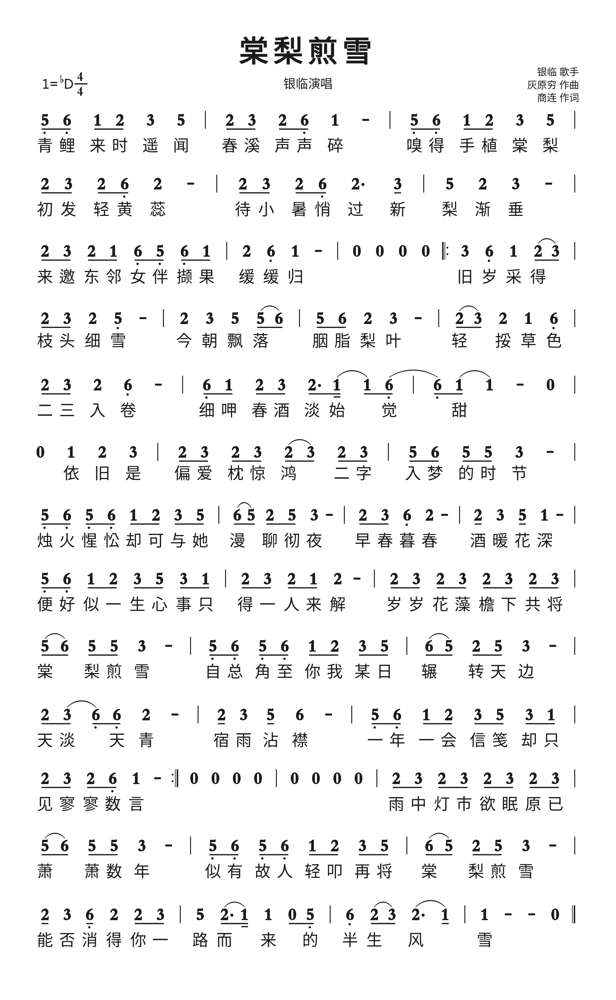
losses: linebreaks-joined:15 · tag-dropped:hot


牵丝戏
总时值一致 · 小节线偏移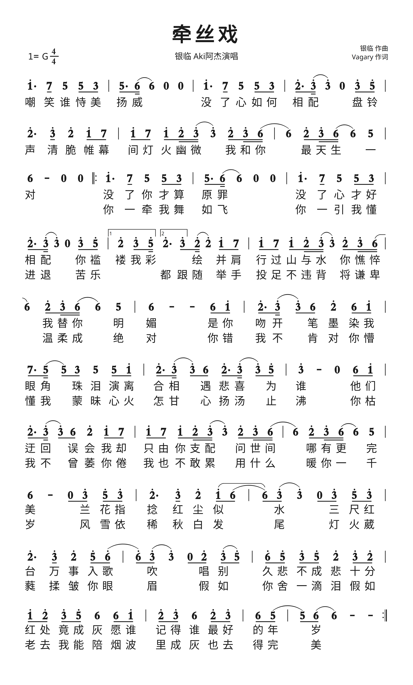
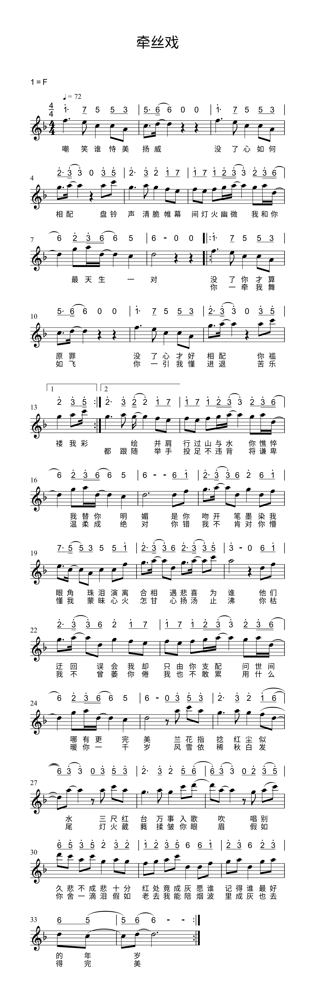
losses: linebreaks-joined:13 · tag-dropped:hot


腐草为萤
总时值一致 · 小节线偏移losses: linebreaks-joined:22 · raw-dropped:'.' · section-block-linearized · section-block-linearized · section-block-linearized · section-block-linearized


虞兮叹
逐小节一致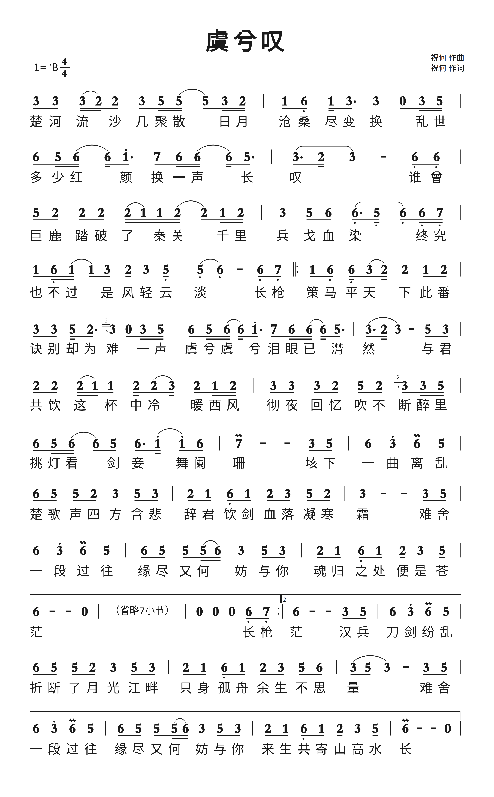
losses: linebreaks-joined:14 · tag-dropped:omit:'7m' · key-b-tonic-octave-shift:+8


赤伶
总时值一致 · 小节线偏移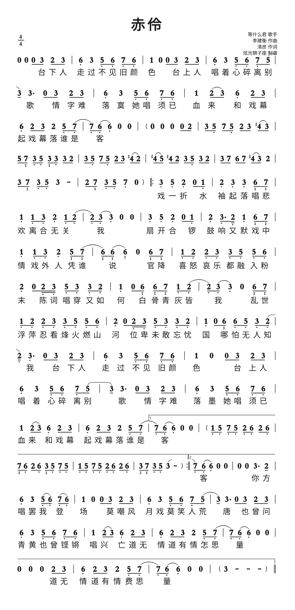
losses: linebreaks-joined:41 · keynote-empty · section-block-linearized · section-block-linearized · section-block-linearized · section-block-linearized …


辞·九门回忆
逐小节一致losses: linebreaks-joined:13 · slash-as-beam:2 · tag-dropped:hot · section-block-linearized · section-block-linearized · tag-unknown::'2_4' …


遇萤
混排渲染失败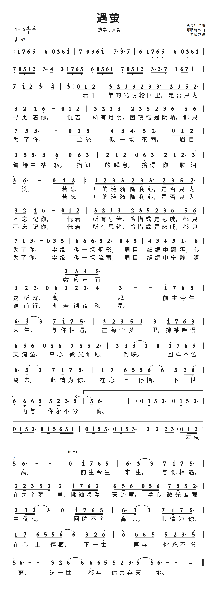
losses: linebreaks-joined:28 · slash-as-beam:139 · section-block-linearized · section-block-linearized · raw-dropped:'%' · raw-dropped:'%' …